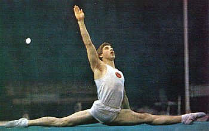

Vladimir Tikhonov (USSR)
1977 European PB Champion
1977 European AA Bronze Medalist

Medal Total
Olympic Games: 1
Silver
European Championships: 1 Gold, 3 Bronze
Vladimir was born in Grozny on October 31, 1956. He trained at Dynamo in Rostov-on-Don.
Competition Results
1974
Jr. Friendship Tournament (Druzhba): 1st HB, 4th PH, 4th R
1975
Moscow News: 3rd AA, 1st FX
Pre-Olympic Test Event: 4th AA, 4th FX, 4th HB
Riga International: 10th AA, 1st PH, 4th HB
1976
Chunichi Cup: 2nd AA
Moscow News: 3rd AA, 1st R, 3rd HB
Olympic Games: 2nd Team, 23rd AA (prelims)
Tokyo Cup: 1st FX, 1st PB, 1st HB, 2nd R, 3rd PH
USSR Championships: 1st Team, 5th AA, 2nd HB, 4th FX, 4th PH
USSR Cup: 2nd AA
1977
European Championships: 3rd AA, 1st PB, 3rd FX, 3rd
R, 6th V, 7th PH
Riga International: 1st AA, 1st PB, 1st HB, 2nd FX, 2nd PH, 2nd R
University Games: 3rd AA, 2nd PH, 3rd FX, 3rd R
USSR Championships: 3rd AA, 3rd HB, 4th FX, 8th PH
USSR Cup: 5th AA
1978
Riga International: 1st AA, 1st FX, 1st R, 1st PB, 5th PH
USSR Championships: 6th AA, 6th HB, 7th PH, 7th V
USSR Cup: 6th AA
This page was created on December
30, 2006 and was last updated on January 03, 2007.
© Gymn Forum